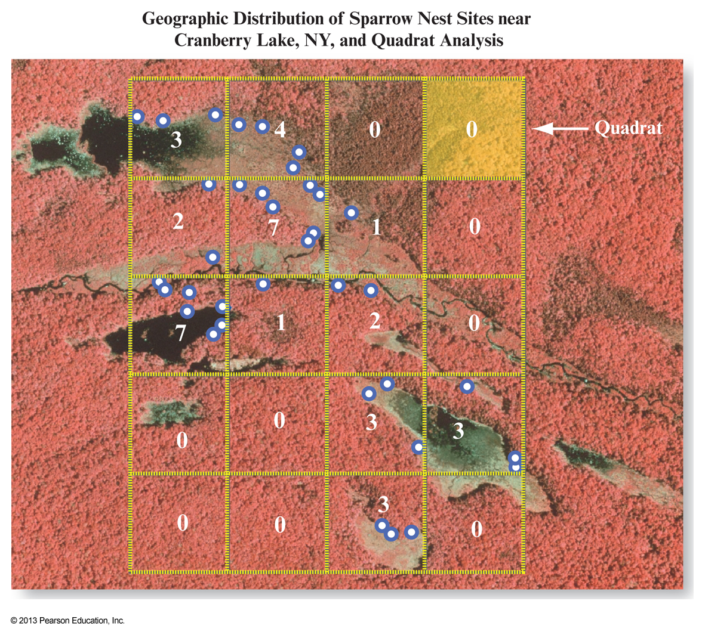
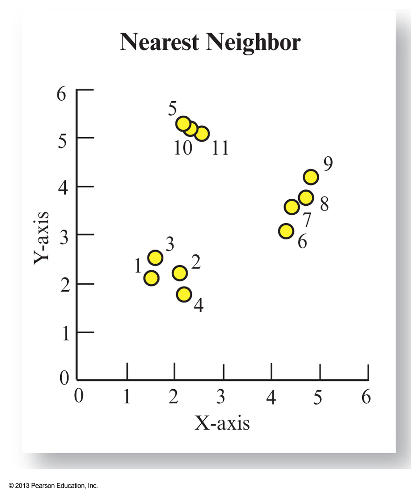
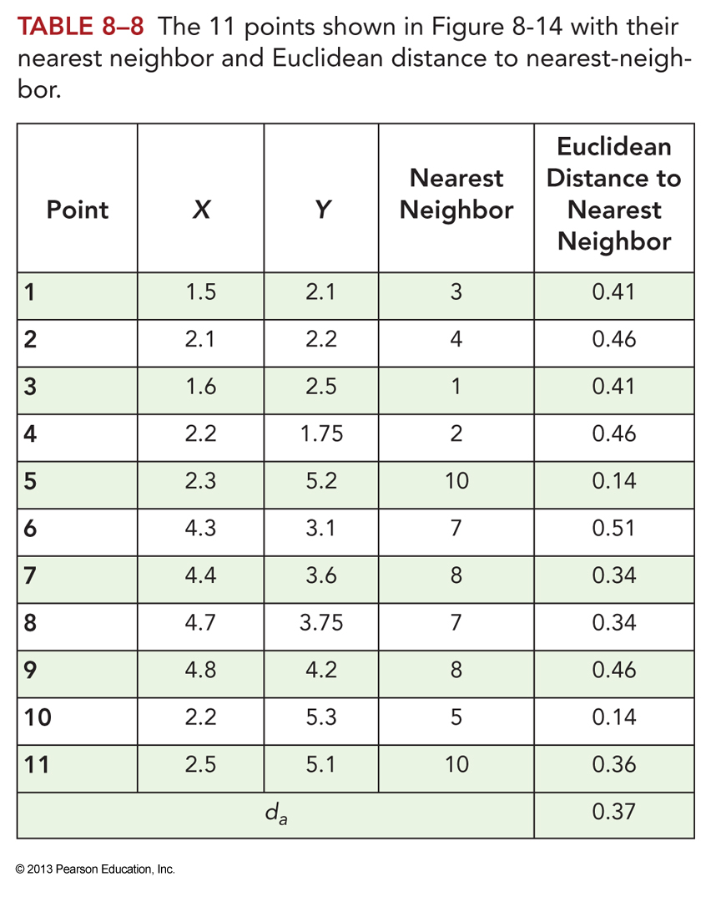
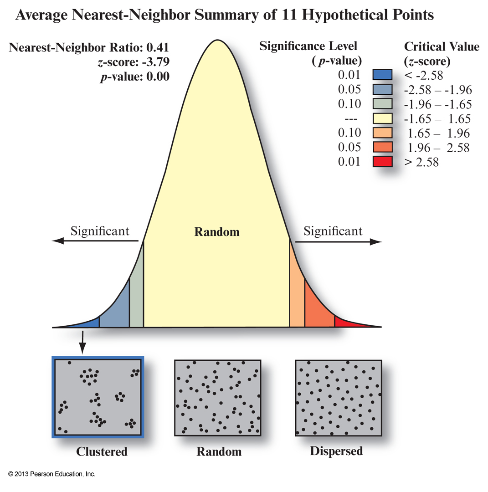
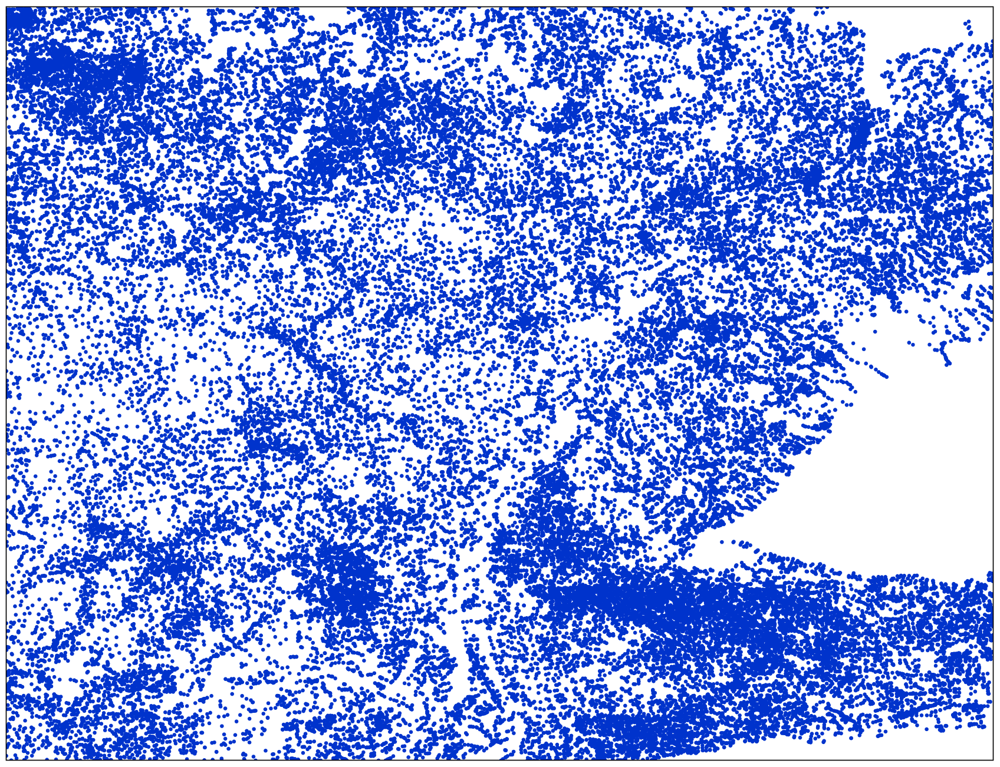
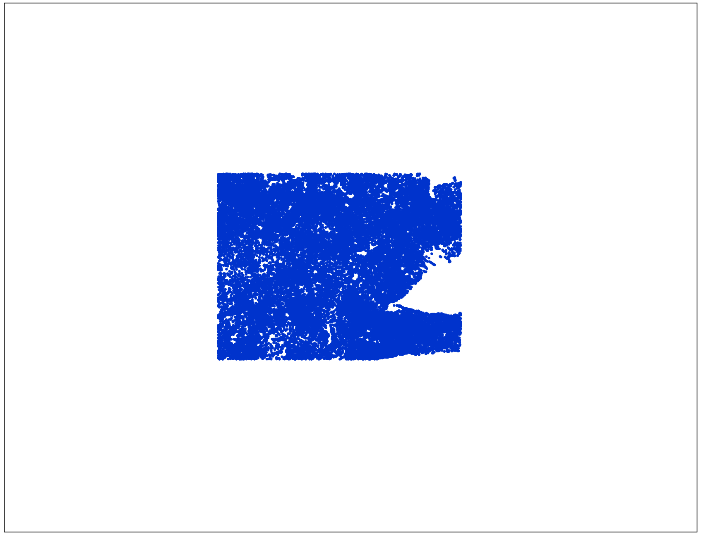
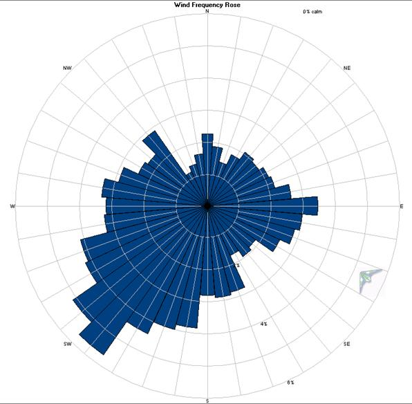
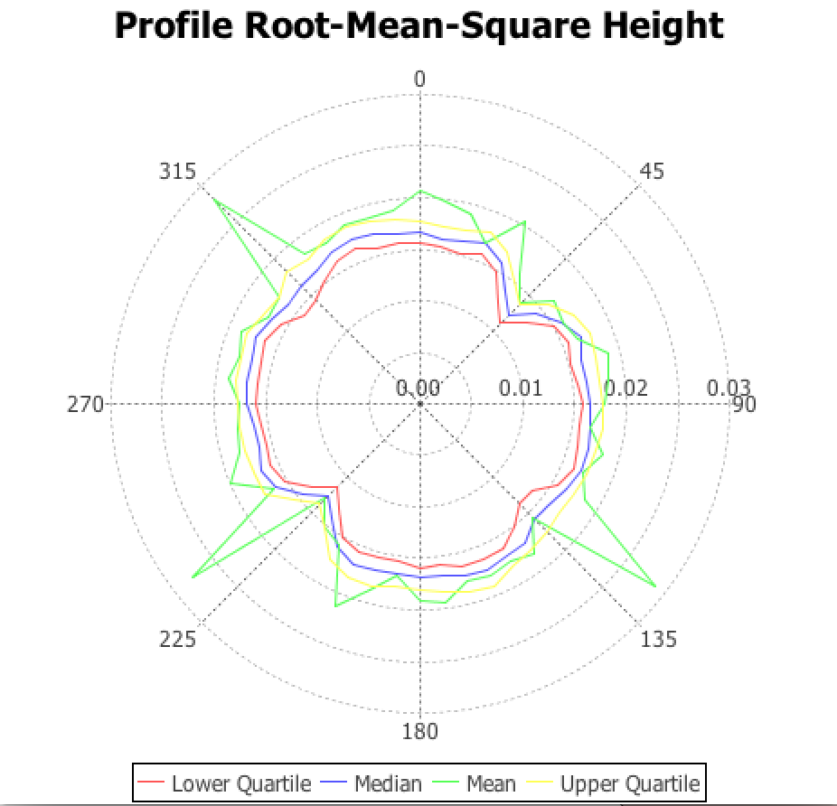

<!doctype html>
<html lang="en">

	<head>
		<meta charset="utf-8">
		<title>GEOG*3480 Lecture 5</title>
		<link rel="stylesheet" href="../revealjs/css/reveal.css">
		<link rel="stylesheet" href="../revealjs/css/theme/white.css" id="theme">
    <link rel="stylesheet" href="../revealjs/lib/css/zenburn.css">
    <link rel="stylesheet" href="../revealjs/css/lindsay.css">

		<!-- If the query includes 'print-pdf', include the PDF print sheet -->
 		<script>
			if( window.location.search.match( /print-pdf/gi ) ) {
				var link = document.createElement( 'link' );
				link.rel = 'stylesheet';
				link.type = 'text/css';
				link.href = '../revealjs/css/print/pdf.css';
				document.getElementsByTagName( 'head' )[0].appendChild( link );
			}
 		</script>

		<script
			src="http://cdn.mathjax.org/mathjax/latest/MathJax.js?config=TeX-AMS-MML_HTMLorMML"
			type="text/javascript">
		</script>
	</head>

	<body>

		<div class="reveal">

			<div class="slides">
        <section id="themes">
					<p><small>Press 'o' to toggle the slide overview and 'f' for full-screen mode.</small></p>
					<p>
            <small>Choose the theme in which to view this presentation:<br/><br/>
						<!-- Hacks to swap themes after the page has loaded. Not flexible. -->
						<a href="#" onclick="document.getElementById('theme').setAttribute('href','../revealjs/css/theme/black.css'); return false;">Black</a> -
						<a href="#" onclick="document.getElementById('theme').setAttribute('href','../revealjs/css/theme/white.css'); return false;">White</a> -
						<a href="#" onclick="document.getElementById('theme').setAttribute('href','../revealjs/css/theme/league.css'); return false;">League</a> -
						<a href="#" onclick="document.getElementById('theme').setAttribute('href','../revealjs/css/theme/sky.css'); return false;">Sky</a> -
						<a href="#" onclick="document.getElementById('theme').setAttribute('href','../revealjs/css/theme/beige.css'); return false;">Beige</a> -
						<a href="#" onclick="document.getElementById('theme').setAttribute('href','../revealjs/css/theme/simple.css'); return false;">Simple</a> <br>
						<a href="#" onclick="document.getElementById('theme').setAttribute('href','../revealjs/css/theme/serif.css'); return false;">Serif</a> -
						<a href="#" onclick="document.getElementById('theme').setAttribute('href','../revealjs/css/theme/blood.css'); return false;">Blood</a> -
						<a href="#" onclick="document.getElementById('theme').setAttribute('href','../revealjs/css/theme/night.css'); return false;">Night</a> -
						<a href="#" onclick="document.getElementById('theme').setAttribute('href','../revealjs/css/theme/moon.css'); return false;">Moon</a> -
						<a href="#" onclick="document.getElementById('theme').setAttribute('href','../revealjs/css/theme/solarized.css'); return false;">Solarized</a>
          </small>
					<br/><br/><br/><br/>
					<small>Copyright &copy; John Lindsay, 2015</small>
          </p>
				</section>

        <section data-background="img/title_image.png" data-background-size="633px">
          <div class=transparentTextBox>
						<h2>GEOG*3480</h2>
            <h3>GIS and Spatial Analysis</h3>
            <br/>
            <h3><em>Statistical Analysis of <br/>Spatial Data</em></h3>
            <br/>
            <br/>
            <span><small>John Lindsay</small></span><br/>
            <span><small>Fall 2015</small></span>
          </div>
				</section>

        <section>
          <h3>Readings</h3>
          <ul>
            <li>Jensen and Jensen Chapter 8</li>
          </ul>
          <p></p>
        </section>

				<section>
          <h3>Topics</h3>
          <ul>
						<li>Over the next two lectures, we'll discuss:
							<ul>
	            	<li>Descriptive Statistics</li>
								<li>Descriptive Spatial Statistics</li>
								<li>Spatial Autocorrelation</li>
								<li>Point Pattern Analysis
									<ul>
										<li>Quadrat Analysis</li>
										<li>Nearest-Neighbour Analysis</li>
									</ul>
								</li>
								<li>Directional Analysis</li>
							</ul>
						</li>
          </ul>
        </section>

				<section>
		      <h3>Descriptive Statistics</h3>
		      <ul>
		        <li>Measures of <highlightedText>central tendency</highlightedText>
							<ul>
								<li>Mode, median, and mean (\(\overset{-}x\))</li>
								<br/><li>\(\overset{-}x = \frac {\underset{i=1}{\overset{N}{\Sigma}} x} {N}\)</li>
							</ul>
						</li>
		      </ul>
		    </section>

				<section>
		      <h3>Descriptive Statistics</h3>
		      <ul>
		        <li>Measures of <highlightedText>dispersion</highlightedText>
							<ul>
								<li>Variance (\(s^2\))</li>
								<li>Standard deviation (\(s\))</li>

								<br/><li>\(s^2 = \frac {\underset{i=1}{\overset{N}{\Sigma}} (x_i - \overset{-}x)^2} {N - 1}\)</li>
								<br/><li>\(s = \sqrt \frac {\underset{i=1}{\overset{N}{\Sigma}} (x_i - \overset{-}x)^2} {N - 1}\)</li>
							</ul>
						</li>
		      </ul>
		    </section>

				<section>
		      <h3>Descriptive Statistics</h3>
		      <ul>
		        <li>Skewness
							<ul>
								<li>Measure of the <highlightedText>asymmetry</highlightedText> of a distribution</li>
							</ul>
						</li>
						<br/><li>Kurtosis
							<ul>
								<li>Measure of the <highlightedText>peakedness</highlightedText> of a distribution</li>
							</ul>
						</li>
		      </ul>
		    </section>

				<section>
		      
					<span><verySmallText>(From: Jensen &amp; Jensen 2013)</verySmallText></span>
				</section>

				<section>
		      
					<br/><span><verySmallText>(From: Jensen &amp; Jensen 2013)</verySmallText></span>
				</section>

				<section>
		      <h3>Descriptive Spatial Statistics</h3>
		      <ul>
		        <li><highlightedText>Mean Centre</highlightedText>
							<ul>
								<li>Measure of central tendency that can be used to determine the
									centre of a distribution plotted in geographic coordinates.</li>
							</ul>
						</li>
						<br/><li><highlightedText>Standard Distance</highlightedText>
							<ul>
								<li>Measure of dispersion of geographically distributed data.</li>
							</ul>
						</li>
		      </ul>
		    </section>

				<section>
		      
					<br/><span><verySmallText>(From: Jensen &amp; Jensen 2013)</verySmallText></span>
				</section>

				<section>
		      <h3>Tobler’s first law</h3>
		      <ul>
		        <li>The first law of geography: “everything is related to everything else,
							but near things are more related than distant things.” (Tobler, 1970)</li>
						<br/><li>This simple statement forms the basis for a great deal of
							geographical analysis and is concept underlying the idea of
							<highlightedText>spatial autocorrelation</highlightedText>.</li>
						<br/><li>Synonymous with the concept of <highlightedText>spatial
							dependence</highlightedText> in geostatistics</li>
		      </ul>
		    </section>

				<section>
		      <h3>Spatial autocorrelation</h3>
		      <ul>
		        <li>Correlation of a variable with itself through space.
							<ul>
								<li>Correlation versus spatial autocorrelation</li>
							</ul>
						</li>
		        <br/><li>Actually bad news and good news
							<ul>
								<li>Bad for statistical reasons</li>
								<li>Good because, “if geography is worth studying at all, it must be
									because phenomena do not vary randomly through space”
									(O'Sullivan and Unwin, 2003, pg. 28)</li>
								<li>Essential for spatial modelling through <highlightedText>Interpolation<highlightedText></li>
							</ul>
						</li>
		      </ul>
		    </section>

				<section>
		      <h3>Spatial autocorrelation</h3>
		      <ul>
		        <li>Three possibilities:
							<ul>
								<li><highlightedText>Clustered</highlightedText> (positive autocorrelation):
									nearby locations are likely to be similar to one another.</li>
								<br/><li><highlightedText>Random</highlightedText> (autocorrelation near zero):
									no spatial effect is discernible, and observations
									seem to vary randomly through space</li>
								<br/><li><highlightedText>Dispersed</highlightedText> (negative autocorrelation):
									observations from nearby observations are
									likely to be different from one another.</li>
							</ul>
						</li>
		      </ul>
		    </section>

				<section>
		      <h3>Spatial autocorrelation</h3>
		    	
		    </section>

				<section>
		      <h3>Moran's \(I\)</h3>
		      <ul>
		        <li>Moran's \(I\) measures the interdependence in spatial distributions.
							<ul>
								<li>Used with interval/ratio level data</li>
								<li>Used to detect spatial trends</li>
								<li>-1 &le; \(I\) &le; 1</li>
								<li>\(I\) = -1 = dispersed</li>
								<li>\(I\) = 0 = random</li>
								<li>\(I\) = +1 = clustered</li>
							</ul>
						</li>
		      </ul>
		    </section>

				<section>
		      <h3>Moran's \(I\)</h3>
					<br/><div>\(I = \frac {N}{\underset{i=1}{\overset{N} \Sigma} \underset{j=1}{\overset{N} \Sigma} w_{ij}} \frac {\underset{i=1}{\overset{N} \Sigma} \underset{j=1}{\overset{N} \Sigma} w_{ij} (x_i - \overset{-} x) (x_j - \overset{-} x)}{\underset{i=1}{\overset{N} \Sigma} {(x_i - \overset{-} x)^2}}\)</div>
					<br/><div class=leftAlignedText>Where \(\overset{-} x\) is the mean of variable \(x\); \( x_i \) is the
						value at \(i\); \(j\) is a neighbour of \(i\); \( w_{ij} \) is the weight between neighbours \(i\) and \(j\).</div>
		    </section>

				<section>
		      
					<span><verySmallText>(From: Jensen &amp; Jensen 2013)</verySmallText></span>
				</section>

				<section>
		      
					<span><verySmallText>(From: Jensen &amp; Jensen 2013)</verySmallText></span>
				</section>

				<section>
		      <h3>Point Pattern Analysis</h3>
					<ul>
						<li>Mapped point data often exhibit distinct patterning.</li>
						<br/><li>Patterns result from the spatial component of a control on the phenomenon.</li>
						<br/><li>Understanding the pattern can help with understanding the controlling
							forces on the phenomenon.</li>
					</ul>
				</section>

				<section>
		      <h3>Point Pattern Analysis</h3>
					<ul>
						<li>The patterns that we're interested in with <highlightedText>Point Pattern
							Analysis</highlightedText> (PPA) result from the locations of individual points and not on their
							attributes, for which spatial autocorrelation is more relevant.</li>
						<br/><li><highlightedText>Quadrat Analysis</highlightedText> and <highlightedText>
						Nearest-Neighbour Analysis</highlightedText> the the two most common methods for PPA</li>
					</ul>
				</section>

				<section>
		      <h3>Quadrat Analysis</h3>
					<ul>
						<li>A <highlightedText>quadrat</highlightedText> is a user-defined geographic area,
							usually a square or rectangle, used to measure the distribution of a spatial
							phenomenon.</li>
						<br/><li><highlightedText>Quadrat analysis</highlightedText> can be used to test
						whether the phenomenon is uniformly distributed.</li>
						<br/><li>The <highlightedText>Chi Square</highlightedText> test is used with quadrats.</li>
					</ul>
				</section>

				<section>
		      
					<span><verySmallText>(From: Jensen &amp; Jensen 2013)</verySmallText></span>
				</section>

				<section>
		      
					<span><verySmallText>(From: Jensen &amp; Jensen 2013)</verySmallText></span>
				</section>

				<section>
		      <h3>Quadrat Analysis</h3>
					<ul>
						<li>The value of Chi Square is compared with a table of critical values to determine
						whether the points are statistically significantly different from a uniformly distribution.</li>
						<br/><li>You should be thinking about the MAUP about now!</li>
						<br/><li>The size, shape, and number of quadrats will impact the results
						of the quadrat analysis.</li>
					</ul>
				</section>

				<section>
		      <h3>Nearest-neighbour Analysis</h3>
					<ul>
						<li>NNA is used in GIS to determine whether point sets are random or non-random.</li>
						<li>If a point set is found to be non-random then we are left with the task
						of determining what controls the distribution.</li>
						<li>For each point in the set, find the distance to the closest neighbour.</li>
					</ul>
				</section>

				<section>
		      
					<span><verySmallText>(From: Jensen &amp; Jensen 2013)</verySmallText></span>
				</section>

				<section>
		      
					<span><verySmallText>(From: Jensen &amp; Jensen 2013)</verySmallText></span>
				</section>

				<section>
		      <h3>Nearest-neighbour Analysis</h3>
					<div>\(d_e = \frac 1 {2 \sqrt{N/A}} = \frac 1 {2 \sqrt{p}} \)</div>
					<br/><ul>
						<li>where \(d_e\) is the expected density (assuming random distribution);
						\(N\) is the number of points; \(A\) is the study area; \(p\) is the point density.</li>
					</ul>

					<br/><div>\(NNR = \frac {Dist_{Obs}} {Dist_{Ran}} = \frac {d_a} {d_e} \)</div>
					<br/><ul>
						<li>where \(NNR\) is the <highlightedText>nearest-neighbour ratio</highlightedText>;
						\(Dist_{Obs}\) is the mean NN distance; \(Dist_{Ran}\) is the expected distance for a random distribution.</li>
					</ul>
				</section>

				<section>
		      
					<span><verySmallText>(From: Jensen &amp; Jensen 2013)</verySmallText></span>
				</section>

				<section>
		      <h3>Nearest-neighbour Analysis</h3>
					<ul>
						<li>Warning: Our estimates of the point density is dependent on our
							definition of the study area.</li>
						<li>If we change the extent of the study area, we change the results.</li>
					</ul>
					<div>
						<table>
							<tr><th>Not so clustered</th><th>Very clustered</th></tr>
							<tr>
								<td></td>
								<td></td>
							</tr>
						</table>
					</div>
				</section>

				<section>
		      <h3>Nearest-neighbour Analysis</h3>
					<ul>
						<li>NNA is also sensitive to the <highlightedText>non-uniformity of underlying space</highlightedText>.</li>
						<li>NNA assumes that points are free to locate anywhere.</li>
						<li>Consider the gap in stream channel heads below. It's the result of Lake Ontario.</li>
					</ul>
					<div></div>
				</section>

				<section>
		      <h3>Circular Data</h3>
					<ul>
						<li>Geographers distinguish between <highlightedText>directional</highlightedText>
						(0&deg;-360&deg;) and <highlightedText>axial</highlightedText> (a.k.a. oriented; 0&deg;-180&deg;) data.
						<ul>
							<li>Wind is directional; a road is axial.</li>
						</ul>
					</li>
					<br/><li>Directional and axial data can be plotted using <highlightedText>Rose
						Diagrams</highlightedText>, which are like circular histograms.</li>
					</ul>
				</section>

				<section>
		      <h3>Rose Diagrams</h3>
					<div>
						<table>
							<tr>
								<td></td>
								<td></td>
							</tr>
						</table>
					</div>
				</section>

				<section>
		      <h3>Circular Data</h3>
					<div>\(\overset{-}\theta = tan^{-1}(\frac{\overset{N}{\underset{i=1}{\Sigma}}{sin \theta_i}} {\overset{N}{\underset{i=1}{\Sigma}}{cos \theta_i}}) \)</div>
					<br/><ul>
						<li>where \(\overset{-}\theta\) is the <highlightedText>mean direction</highlightedText>,
							derived from the vector resultant.</li>
					</ul>
				</section>

				<section>
		      <h3>Circular Data</h3>
					<div>\(\overset{-}R = \frac 1 N \sqrt{(\overset{N}{\underset{i=1}{\Sigma}}{cos \theta_i})^2 + ({\overset{N}{\underset{i=1}{\Sigma}}{sin \theta_i}})^2} \)</div>
					<br/><ul>
						<li>where \(\overset{-}R\) is the standardized length of the vector resultant,
							called the <highlightedText>mean resultant length</highlightedText>, and is
						a measure of dispersion.</li>

							<li>0 &le; \(\overset{-}R\) &le; 1, where values near 1 indicate small angular dispersion
							and vice versa.</highlightedText></li>
					</ul>
				</section>

				<section>
		      <h3>Circular Data</h3>
					<ul>
						<li>Axial (oriented) data cannot easily be treated as vectors
							because there is nothing to distinguish one end of the line from the other.</li>
					<br/><li>An angle of 179&deg; is very close to one of 1&deg;.</li>
					<br/><li>To solve this double all the angles, calculate the statistics with the
						doubled data, and then halve the angles to get the mean direction, mean resultant
						length, etc.
						<ul>
							<li>45&deg; &times; 2 = 90&deg;</li>
							<li>225&deg; &times; 2 = 450&deg; = 450&deg; - 360&deg; = 90&deg;</li>
						</ul>
					</li>
					</ul>
				</section>

      </div> <!-- slides -->
		</div> <!-- reveal -->

		<script src="../revealjs/lib/js/head.min.js"></script>
		<script src="../revealjs/js/reveal.js"></script>

		<script>

			Reveal.initialize({
				controls: true,
				progress: true,
				history: true,
				center: true,
				slideNumber: 'c / t',
        transition: 'convex', // default/none/fade/slide/convex/concave/zoom
        mouseWheel: true,
        overview: true,

        // parallaxBackgroundImage: "img/earth_image1.png",
        //
        // // Parallax background size
        // parallaxBackgroundSize: '"1100px 900px"', // CSS syntax, e.g. "2100px 900px"
        // parallaxBackgroundHorizontal: 200,
        // parallaxBackgroundVertical: 50,

        // Optional libraries used to extend on reveal.js
				dependencies: [
					{ src: '../revealjs/lib/js/classList.js', condition: function() { return !document.body.classList; } },
					{ src: '../revealjs/plugin/markdown/marked.js', condition: function() { return !!document.querySelector( '[data-markdown]' ); } },
                    { src: '../revealjs/plugin/markdown/markdown.js', condition: function() { return !!document.querySelector( '[data-markdown]' ); } },
                    { src: '../revealjs/plugin/highlight/highlight.js', async: true, callback: function() { hljs.initHighlightingOnLoad(); } },
					{ src: '../revealjs/plugin/notes/notes.js' }
				]
			});

		</script>

    <!-- Template Slide
    <section>
      <h3>Title</h3>
      <ul>
        <li>Item1</li>
        <li>Item2</li>
        <li>Item3</li>
        <li>Item4</li>
      </ul>
    </section>
    -->
		<!-- Template image
		
		-->

	</body>
</html>
